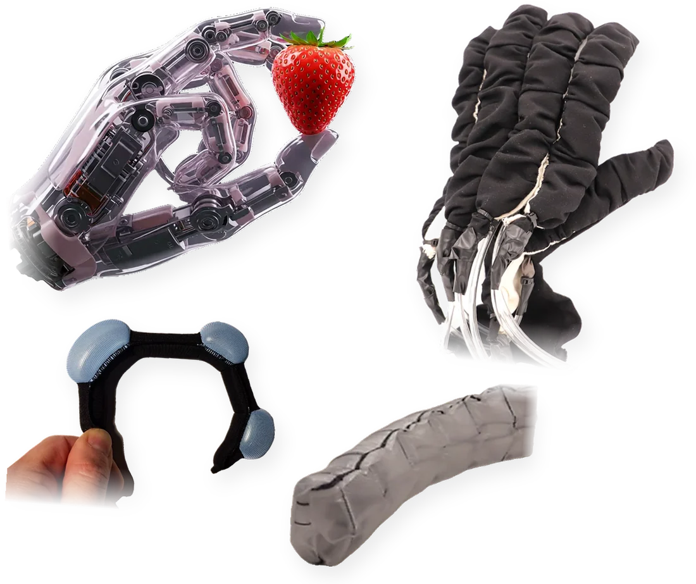
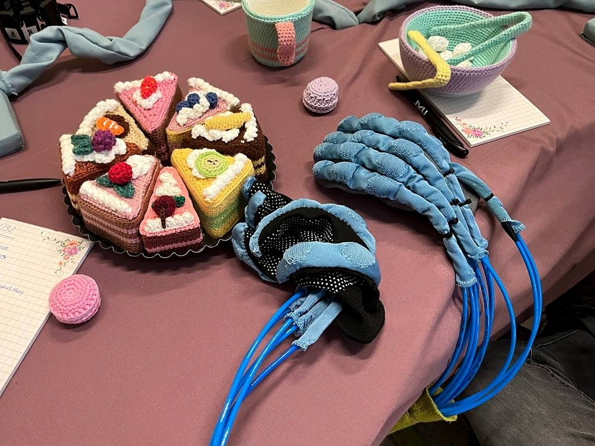
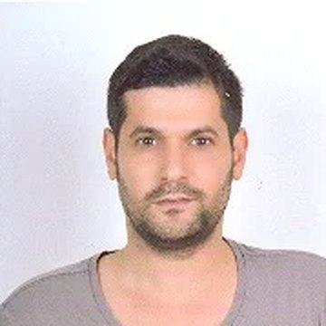
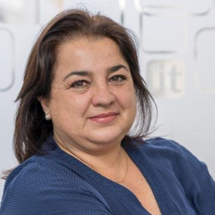
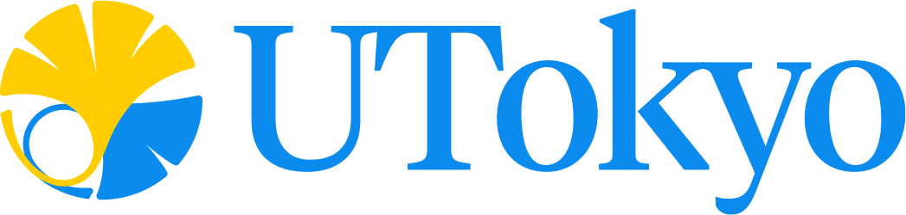

Large-Area Robotic Surfaces that Sense, Actuate and Conform
24 or 28 May 2027 · Seoul
How much can we get from a single thin membrane, and how far can we scale it?
Robots are leaving structured industrial settings for homes, hospitals and close physical collaboration with people, and their surfaces are becoming their most important interface. Humanoid and assistive robots need touch across curved, articulated bodies, not just at the fingertips. Wearable and medical robots need lightweight, conformable structures that can generate force safely.
Both needs point to the same technology: thin, highly deformable structures such as skins, sleeves, sheaths, membranes and coated fabrics that sense, actuate and conform across large areas of the robot body.
Progress is limited less by any single technology than by the gaps between disciplines. Materials researchers develop new textiles, elastomers, hydrogels and polymers, often without direct sight of the problems that limit robotic sensors and actuators in practice. Sensing and actuation researchers face hysteresis, drift, delamination, fatigue and inconsistent fabrication over large areas, many of which are fundamentally materials problems. This workshop brings materials, sensing and actuation experts into the same room so that problems and solutions can meet.
Textiles, elastomers, hydrogels and polymers, and fabrication methods that stay reliable over large areas.
Large-area, soft and conformable tactile sensors for distributed contact detection and perception across robotic surfaces.
Inflatable, everting, extending and shrinking actuators made from textiles, plastics, hydrogels or elastomers, with safe, bounded force output.
Reliability and integration run through all three blocks, especially co-designing sensing and actuation within one deformable structure.
The centrepiece of the day. Participants work directly with textile-based and thin-sheet materials to build and test their own soft sensors and actuators, gaining practical experience of the fabrication, integration and reliability challenges discussed in the talks.
Participants sit in mixed teams, with researchers from materials, sensing and actuation backgrounds at the same table and junior researchers paired with senior ones. Each team builds its hardware together, so the session is also the day's main networking opportunity. It is led by organizers experienced in running e-textile and textile robotics workshops.



| 08:30 – 08:45 | Welcome and overview |
| 08:45 – 10:00 | Sensing talksTextiles, hydrogels, large-area tactile sensing |
| 10:00 – 11:00 | Coffee, Poster Session I and Robot Demos |
| 11:00 – 12:15 | Actuation talksTextiles, elastomers/hydrogels, polymers |
| 12:15 – 12:30 | Spotlight talksEarly-career researchers, 5 × 3 min |
| 12:30 – 14:00 | Lunch break |
| 14:00 – 15:15 | Materials talksTextiles, elastomers/hydrogels, polymers |
| 15:15 – 16:15 | Coffee, Poster Session II and Robot Demos |
| 16:15 – 17:45 | Hands-on Making SessionTextile-based soft sensors and actuators |
| 17:45 – 18:00 | Closing remarks and Best Poster Award |
Invited talks are 20 minutes plus 5 minutes of Q&A. Organizers and speakers will bring robots for live demonstrations during both poster sessions.
We invite non-archival 2-page extended abstracts, including work in progress. Up to 30 posters will be presented, five will be selected for spotlight talks, and the invited speakers will judge the Best Poster Award.
